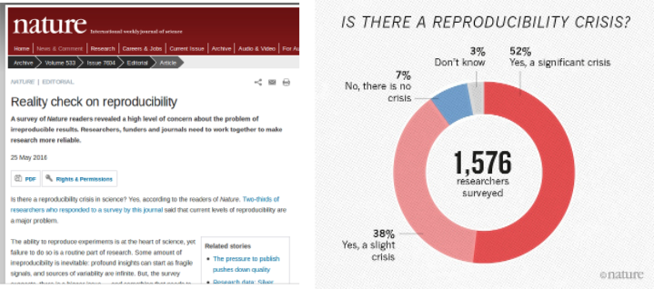
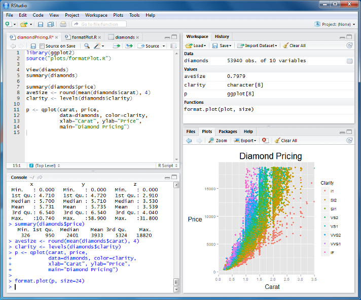

Introduction
1 What is R?
- A statistical programming environment
- based on ‘S’
- suited to high-level data analysis
- But offers much more than just statistics
- Open source and cross platform
- Extensive graphics capabilities
- Diverse range of add-on packages
- Active community of developers
- Thorough documentation

R screenshot

New York Times, Jan 2009
2 Why R?
We can do lot of stuffs in R. Starting from statestical analysis to plotting graphs and figures, Writing technical documentation to making a website and lot more. Lets explore.
3 R plotting capabilities
https://www.facebook.com/notes/facebook-engineering/visualizing-friendships/469716398919 
4 Who uses R? Not just academics!
http://www.revolutionanalytics.com/companies-using-r
- Microsoft
- New York Times
- Buzzfeed
- New Zealand Tourist Board
5 R can facilitate Reproducible Research

Sidney Harris - New York Times
- Statisticians at MD Anderson tried to reproduce results from a Duke paper and unintentionally unravelled a web of incompetence and skullduggery
- as reported in the New York Times

New York Times, July 2011
- Very entertaining talk from Keith Baggerly in Cambridge, December 2010
According to recent editorials, the reproducibility crisis is still on-going

Nature, May 2016
6 Getting started
- Latest release 3.3.2 (October 2016)
- Base package and Contributed packages (general purpose extras)
- 14766 available packages as of Mon Aug 19 23:15:25 2019
- Download from http://mirrors.ebi.ac.uk/CRAN/
- Windows, Mac and Linux versions available
- Executed using command line, or a graphical user interface (GUI)
- On this course, we use the RStudio GUI (www.rstudio.com)

rstudio
To launch RStudio, find the RStudio icon and click

RStudio screenshot